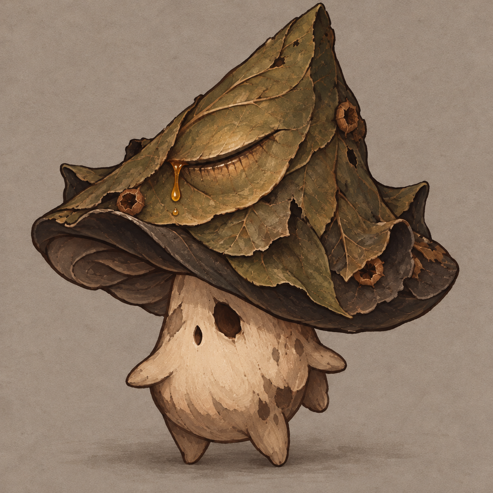
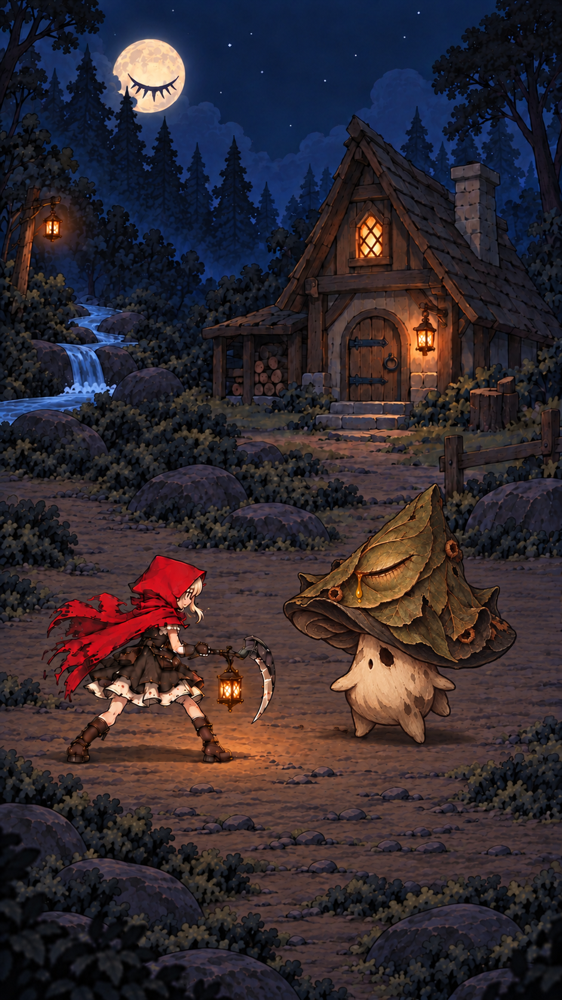
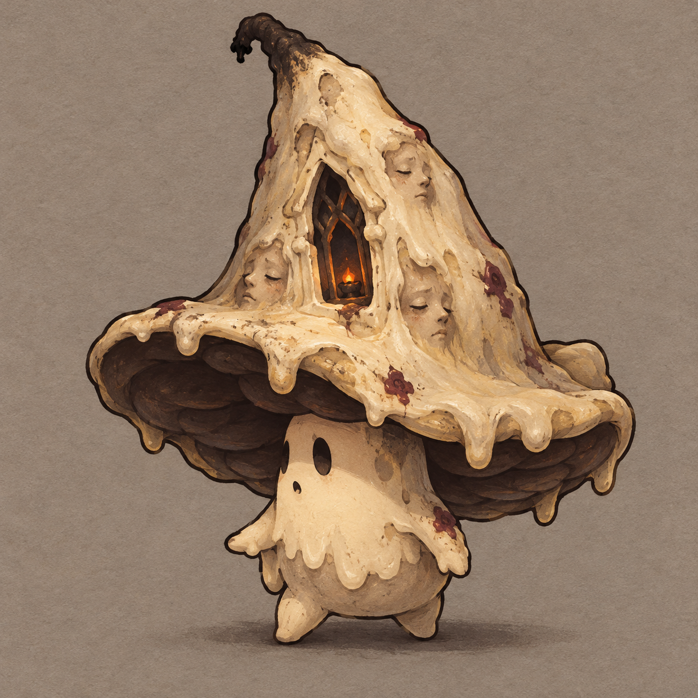
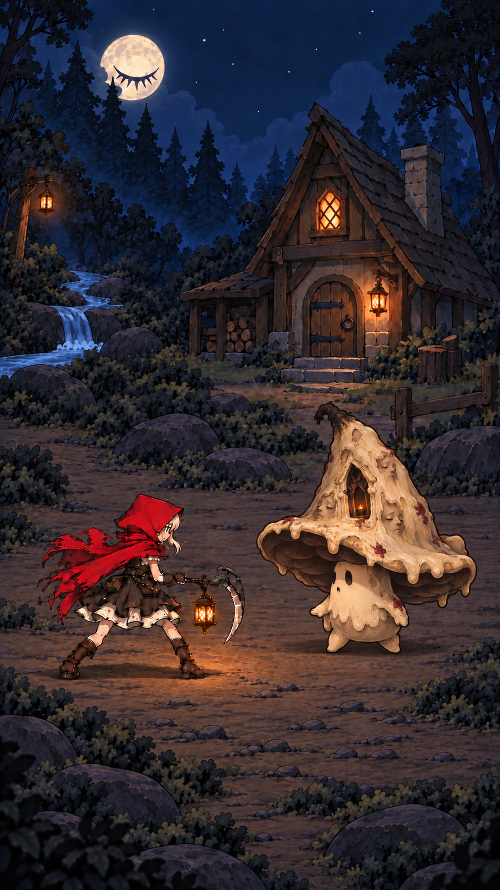
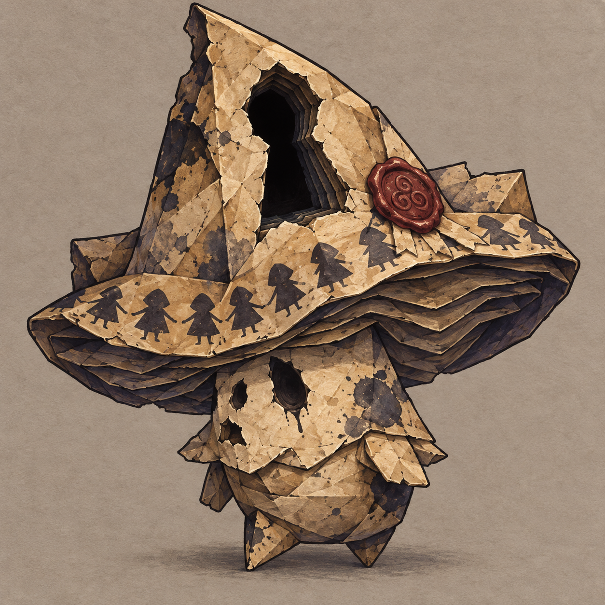
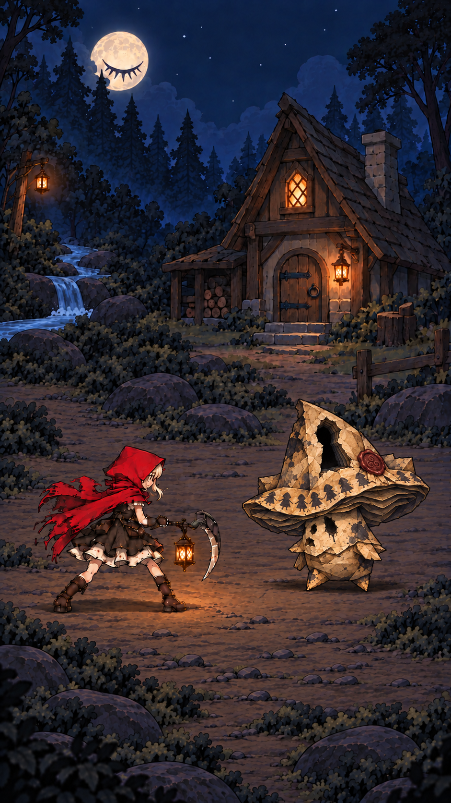

A · 泣叶童
枯橄榄叶帽、浅木色身体；叶脉闭眼渗出琥珀树液。短脚与困倦表情保留可爱感，污染表现为焦边和空洞。森林融合度最高。

战斗概念 · 9:16

枯橄榄叶帽、浅木色身体；叶脉闭眼渗出琥珀树液。短脚与困倦表情保留可爱感，污染表现为焦边和空洞。森林融合度最高。


象牙蜡壳、炭黑帽底、少量暗红蜡封；帽上封住的人脸与微亮烛龛形成异常。圆眼和软蜡轮廓保持稚拙感，夜景最清楚。


旧纸、淡靛阴影和暗红蜡封；帽上不见底的锁孔与剪纸队列形成异常。小纸手脚保持可爱感，墨渍与缺页表现污染。最贴近诅咒童话的书页意象。


设计与骨架适配说明 · 完整提示词与生成来源
原资源：20 bones / 11 slots / 14 animations。新增帽部异常默认静态绘制，动态效果需后续制作验证。